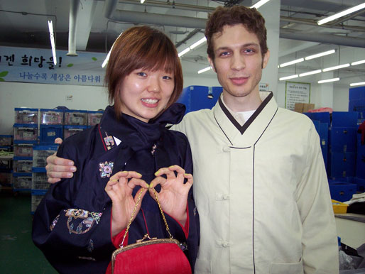
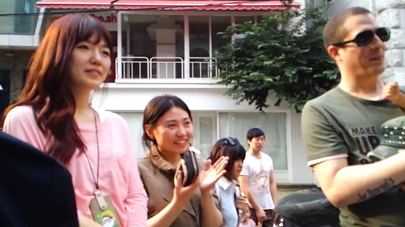
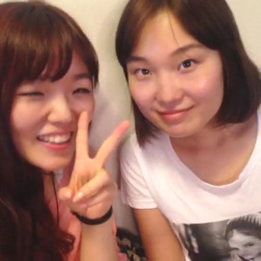

Sidonge
First Love Always in My Heart. My lost love.
English 한국어
It was the Summer of 2006 when I met the Love of my life. My first love like no other, and never would have again.
We met my first month while living in Korea. I was so young, my early 20's, and she was only three years older than I. I also was
very new to the whole dating thing. I didn't always be the best boyfriend I could be, but she always treated me with great love and care.
I didn't realize it at the time, but she was going to be the greatest thing to have ever happen to me. I did fall in love with her, but
being so young I didn't know what true love really was. At least not until I lost her. We were so very passionate together, shared many
great and wonderful times together. I have never felt the way I did when I was with her ever again. Her name is Kyoung Min, and I enjoyed to
call her Kyoung Min-ah, though she preferred to go by Sidong by her friends.
It was a year of Love, that kept me in Korea; it was Kyoung Min who would shape the rest of my life. If it were not for her, I would
have not stayed to eventually meet my wife and have my child. Though it wasn't to be with Kyoung Min. For I was young and dumb, and left
the most perfect woman because I alone didn't put the effort into keeping our relationship alive. It's the only one regret in my life
that I did not try harder for her.

Sidong will always be a part of me, who I am, and my character. I still love her to this day, and will always love her. She is the one I let go when I should have not done so. We were wonderful together and I know that now. I learned a great deal from her, and have always cherished that. I always will.
{kind=link}
Years have passed, and I still have strong feelings for Kyoung Min. Today we are still friends though it pains me so very much (my heart feels like that break it once did before) that I will probably never see her again in our lifetimes. As I, with my wife will be moving back to the United States. I hope though we will stay in touch even though a world apart and there is always the hope we remain friends till the end.
{kind=link}
I told my wife about Kyoung Min, what she means to me. How my past life led me to her and how Kyoung Min will always be special to me. But as we know, one learns from one's mistakes and life must go on. As tis better to love and lost, than to have never loved at all.
{kind=link}

시동 김경민